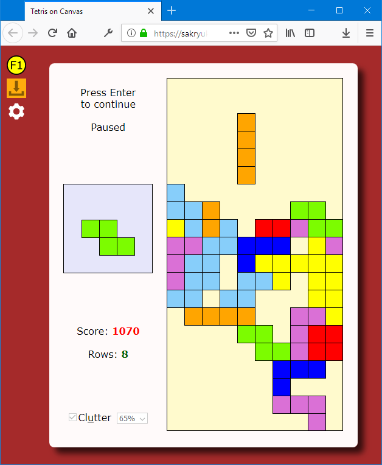

Table of Contents
- Introduction
- Derived Work
- New Features
- Customization
- General Code Design
- Low-Level Tetromino
- Tetromino Constructor and Prototype
- Inner Functions and Event Handling: Passing "this"
- Future Development?
- Versions
- Live Play
- Conclusions
1. Introduction
This is my very first complete work on JavaScript, not counting something totally trivial. I cannot say I never tried anything in the field of pure entertainment before, but, again, nothing worth mentioning.
Falling Blocks is a legendary game with unique combination of extreme simplicity and attractiveness.
Unfortunately, I haven't seen a really playable implementation of the game for a long time. No, I'm not a gamer and did not see much. First of all, I would not risk anything without open source, but what I saw wasn't really playable, due to the lack of most important features and proper look and feel, making no match with the old-time implementations for DOS.
At the same time, HTML with JavaScript using new HTML (HTML5) canvas element is the most attractive platform for simple games. It does not require anything except a browser, should work on all platforms and always comes with source code. So, when I, just be some chance, came across such implementation, I was much pleased. It was apparent that the incomplete work I found was written by quite a qualified author. At the same time, it wasn't yet playable and the quality of code did not satisfy me at the level of its general design, despite of its clarity and general correctness. This was mostly due to the lack of flexibility already put in the initial design and lack of important features. But how can it be a problem if you have a neat source code? So I decided to rewrite it from scratch.
2. Derived Work
This is the original work by Jake Gordon which caught my attention:
I re-wrote nearly 100% of the code from scratch, but I used all the low-level algorithms developed by Jake and followed most of his algorithmic ideas, as well as the general design of the application, decomposition into major blocks: basic helper methods, game with its event queue, rendering with invalidation mechanism and main application. The original Jake's work was incomplete, but some initial design feature already led the development in wrong direction, and the lack of at least one feature made the game not really playable. But I liked the basics of the solution and really wanted to fix it all, to create a really operational and well maintained product.
I did not follow the original code design with the further decomposition of the game into such parts as "constants", "variable", "logics" and so on. Instead, I designed the separation of the settings objects places in a separate file "settings.js", introduced a separate constructor with prototype methods representing Tetromino elements and other structural elements formally expressed as a set of separate JavaScript objects, such as simple FSM and layout.
So, first of all, it allows to easily customize things which were totally rigid in the original work, first of all, the size of the game in blocks can be modified in reasonable limits. Even playing on the board of the size of some 100 x 100 blocks became quite possible (but, by the way, really irritating :-)).
3. New Features
I mentioned the lack of the feature which rendered the implementation of the game not playable. Unfortunately, the lack of this feature is typical for most of the implementations I saw. What is it? There should be a key press (space bar, originally) which should drop a current tetromino to the bottom, where it still can be moved, if there is a room for that. So, I added this important feature.
I completely changed the layout of the page. Original Jake's design was based on the fixed set of predefined layouts for different page sizes. Probably he thought it would be simpler, but it wasn't. Not only it added superfluous CSS code, but looked ugly. Now, the game looks symmetrical on the Web page of any size. A user can adjust the page size at any time, even during the game play. The layout is recalculated according to the window.innerHeight and the size of the game board in blocks. The recalculation is made to keep the size of the block to an integer (not fractional value), so the relative size of the board compared to the inner height of the page vary to keep all the aspects ratio values at the expense of variable game area margins. In other words, it is designed in the style of a well-resized desktop application.
More importantly, the game can be customized. First of all, the size of the game board in block could not be changed, due to the layout and aspect ratio problems I mentioned above. Now, as I mentioned before, it can be changed in a separate file, as well as the block colors and even shapes. I'll describe it in next section of the article. I actually changed the colors and original orientation, to make the game more playable and closer to its original design.
I also added help showing on the same page at any moment of time.
Internally, I created a different thoroughly structured code design, used JavaScript strict mode and exception handling, and improved performance. I'll briefly describe this design in section 5, but first will describe what can be customized.
4. Customization
The customizable part of the game is placed in a separate file "settings.js".
- Game size in blocks can be changed, due to the changes in the layout described above. This declaration can be changed:
const gameSizeInBlocks = { x:10, y:20 }
- Key assignment can be changed in the object
key. The properties of this object are named by function, not by key name. By default, [Enter] is used to start/pause/continue the game, [Esc] stops currently played game, arrow keys move the current tetromino element ("up" key rotates it), blank space drops it down, [F1] shows and hides help.
- Timing of the game can be changed in the object
delays. This object defines the delays in seconds before moving a tetromino element by a line: initial, minimal and decrement of the delay applied for acceleration of the game as the user progress. The delay is incremented by a constant value as total number of lines, according to the game rule, grows.
- Score rules can be changed in the object
scoreRules. The rules define the added score on the drop of each tetromino and when some rows are removed. The rules can be any user-defined functions calculated the added score depending on current count of removed lines, score and the number of lines to be removed at once. By default, a fixed amount of points is added for each dropped line, and the amount of points added for removed lines grows as a power function of the number of lines removed at once. This is done according the original game design, where the player is given the incentive to collect numbers of incomplete rows and then complete up to 4 of them at once.
- Finally, tetromino colors and shapes can be changed. I'll explain it in section 6.
5. General Code Design
The central unit of the game is the Tetromino constructor and two methods of its prototype object described in section 7.
The code starts with the file "settings.js" including in HTML first, and the main code is in "application.js".
The object layout gets main DOM elements and implements original layout and the layout behavior on the change of the window size. Next object, game, defines the game logic abstracted from the graphical rendering, which is delegated to the object rendering, which uses HTML5 Canvas feature,
A set of few simple basic utility functions is put below all that, followed by the game's main anonymous function, which is implemented in the IIFE form, which helps to keep all local functions inaccessible from outside the main function. This pattern is used throughout the code. (Please see this article on the IIFE JavaScript design pattern, "Immediately-invoked function expression".)
Another problem elegantly solved by this design pattern is the resolution of the requirements of JavaScript strict mode. It helps to use inner functions and, at the same time, sandwich the main code in the try-catch block, which is important, especially for development.
Main function initialize the game, installs event handlers and starts the first frame; other frames are requested through window.requestAnimationFrame. The use of exception catching is limited to the very top level: on each event handler and main function, according to the structural exception handling philosophy.
As a next step, I'll describe the most interesting part of the code: the code of the algorithms and its implementation.
6. Low-Level Tetromino
This is a fragment if bitwise definition of tetromino shapes:
function TetrominoShape(size, blocks, color) {
this.size = size; this.blocks = blocks; this.color = color;
}
const tetrominoSet = [
new TetrominoShape(4, [0x0F00, 0x2222, 0x00F0, 0x4444], tetrominoColor.I),
];
This is the description of the binary representation of each shape object:
7. Tetromino Constructor and Prototype
I introduced the Tetromino constructor object for some very good reasons: to improve performance of the code and maintainability at the same time. Related JavaScript features are often referred to as "OOP" and "class", but these are very misleading or at least controversial terms; JavaScript prototype-based object machinery is principally different from "OOP with classes".
Here is the constructor:
function Tetromino(shape, x, y, orientation) {
this.shape = shape;
this.x = x;
this.y = y;
this.orientation = orientation;
}
And two method are added to its prototype:
Tetromino.prototype = {
first: function(x0, y0, orientation, fn, doBreak) {
let row = 0, col = 0, result = false,
blocks = this.shape.blocks[orientation];
for(let bit = 0x8000; bit > 0; bit = bit >> 1) {
if (blocks & bit) {
result = fn(x0 + col, y0 + row);
if (doBreak && result)
return result;
}
if (++col === 4) {
col = 0;
++row;
}
}
return result;
},
all: function(fn) {
this.first(this.x, this.y, this.orientation, fn, false);
}
}
These two methods is the heart of the low-level algorithms: they implement well-known "first of" and "all" patterns. They traverse all the blocks in the tetromino shape and the first one breaks the search when some condition supplied by the function argument becomes true.
This break one of the major performance improvements as original code traversed all blocks of a given shape in all cases. (Also note, that the first and all are created only once; that's why this prototype assignment is done outside of the constructor.)
This is how the function first is used in the game logic:
willHitObstacle: function(tetromino, x0, y0, orientation) {
return tetromino.first(x0, y0, orientation, function(x, y) {
if ((x < 0)
|| (x >= gameSizeInBlocks.x)
|| (y < 0)
|| (y >= gameSizeInBlocks.y)
|| game.getBlock(x,y))
return true;
}, true);
},
As soon as the anonymous function passed to tetromino.first returs true, the function first also returns true immediately, breaking from the loop traversing the tetromino blocks. This indicates that the first obstacle has been encountered, which could be one of the walls or another block. Detecting the very first obstacle makes further consideration of obstacle redundant, so the function willHitObstacle returns true at this point.
The use of the function Tetromino.all is simpler: all blocks of the shape are traversed. This is used, in particular, for drawing the tetromino elements on the HTML canvas.
8. Inner Functions and Event Handling: Passing "this"
Let's look at one more interesting detail: now an event handlers are added. It's enough to consider just one. This is how it can be done:
function someFunction(event) { }
document.onkeydown = someFunction;
Will it work? One little problem is that the handler function is implemented as a member of the game object. So will the below code also work?
document.onkeydown = game.keydown;
Not quite. The problem is that the keydown function uses not only the event argument, but also the implicit argument this, which is used to access other members of the game object. If the event handler is added the way showed above, this this argument will still be passed, as always, but it will, not too surprisingly, reference… document object. Didn't I created some artificial problem for myself? Not at all. This problem is easily solved this way:
document.onkeydown = function(event) { game.keydown(event); };
Note that the event argument should be explicitly passed.
Similar story goes with inner functions. Look at the short fragment of the object rendering:
const rendering = {
promptText: element("prompt"),
rowsText: element("rows"),
pausedText: element("paused"),
invalid: { board: true, upcoming: true, score: true, rows: true, state: true },
draw: function() {
const drawRows = function() {
if (!this.invalid.rows) return;
setText(this.rowsText, game.rows);
this.invalid.rows = false;
};
const drawState = function() {
if (!this.invalid.state) return;
setText(statusVerb, game.states.current === game.states.paused ? "continue" : "start");
setVisibility(this.pausedText, game.states.current === game.states.paused);
setVisibility(this.promptText, game.states.current != game.states.playing);
this.invalid.state = false;
};
drawRows.call(this);
drawState.call(this);
}
}
In the beginning of my design, several drawing methods like drawRows or drawState were defined as rendering properties, until I figured out that they won't be used anywhere but in draw, so it's better to hide them from outside context by making them inner functions. From the code fragment shown above, one can see that they use implicit this argument to access members of the object rendering. Why direct calls (commented out in the code sample) won't work? In JavaScript, this argument passed to an inner function would be the outer function object, draw instead of rendering. The work-around is to use the function's call function, which simply passes this explicitly: https://developer.mozilla.org/en-US/docs/Web/JavaScript/Reference/Global_Objects/Function/call
Of course, it would be possible to add an explicit argument and pass rendering, but using already-always-passing implicit this argument is a natural and economic solution. After all, I wanted to explain a very general technique for dealing with inner functions.
9. Future Development?
I have no plan on adding mouse/touch support to the game. I actually implemented experimental version with mouse control and decided to remove it: it basically worked in different variants, but playing with mouse is really awkward, inconvenient.
It would be really more practical to add the support for the accelerometer and gyroscope for client computers having this equipment. But this rather would be the job for native Windows, Linux or Android. As to the use of any Web technologies, I find it important to… wait. I strongly believe that the use of any devices should be incorporated in the public applications only when they become standardized with W3 Consortium, even so widespread devices as Web cameras or fingerprint readers. In my opinion, all such devices can be used when appropriate W3 drafts or just proposals evolve into standards and get implemented in the major browsers. Please see, for example:
I don't want to break JavaScript isolation and interact with file system for the sake of storing the setting. By some very good reasons, this is considered unsafe. As I designed the application rather for "home use", not for playing online, it would quite possible and pretty easy to generate a setting file from UI on the fly and make it downloadable, so the user could replace it manually.
I think the only legitimate way would be using Web local storage for the game setting. Apparently, this is would be one additional feature to implement. Another one would be the option to populate the game with blocks when it starts, with chosen average density and up to certain height. This is the popular feature of the original game which I would love to implement, as I think this is the most interesting way to play it. By a number of reasons, it is less trivial than the rest, so I'm only thinking about it.
[Update]
Interactive on-line editor of game settings and using Web local storage for permanent data storage is implemented in v. 7.0.
I invite anyone to send any suggestions or spin-off any kind of derived work.
10. Versions
1.0: February 15, 2015: First fully-functional version, as described in the article.
1.1: February 19, 2015: Functionally the same version, with version information, links to the information on the game, license, contributors and original publication, added to the help box. This is done for the possibility to publish the product on a stand-along Web page, apart from this article, still showing this legally sensitive information.
2.0: February 19, 2015: Known browser compatibility issues fixed.
3.0: September 20, 2015: Modernized JavaScript code, text-based help show/close button replaced with SVG image, added a note for incompatible browsers.
4.0: January 20, 2019: Fixed behavior after a tetromino is dropped down (with blank space key): now its location freezes, so it cannot be moved anymore; move keys affect next tetromino element.
4.1: January 23, 2019: Implemented more advanced handling of Space character.
Now it drops down current tetromino only if the key is not auto-repeat space or if Ctrl+Space is pressed.
KeyboardEvent.repeat may be not implemented in all browsers, so this property is simulated using game.repeatedKeyDropDown property. Help is updated accordingly.
7.0: February 1, 2019: Many new features.
- Added "Download source code" and "Settings" commands.
- New "Settings" page provides interactive and convenient way to customize game size in blocks, timing (speed and speed growth), tetromino colors and key assignments, as well as "clutter". Custom data is saved in a browser's local storage and can be removed at any time.
- "Clutter" is the feature typical for best old implementations of classical Tetris which adds interest to the game. The game field is cluttered with random tetrominoes up to certain height (specified by the user in percents via settings or immediately before the game). Then the user can try to clean up the clutter.
- Many convenience feature and better help. In particular, custom key assignments are reflected in help.
7.1: February 5, 2019: Fixed the problem with browsers not allowing localStorage (DOM Storage) — implemented the fallback: playing works, but not storing of custom data in local storage.
The problem was revealed by testing on: Microsoft Edge 42.17134.1.0, EdgeHTML 17.17134, 2018.
11. Live Play
The game can be played live here.
12. Conclusions
For some good reasons, JavaScript is sometimes claimed to be the world's most misunderstood language:
http://javascript.crockford.com/javascript.html
https://yow.eventer.com/yow-2013-1080/the-world-s-most-misunderstood-programming-language-by-douglas-crockford-1377.
One important lesson I learned from this exercise is: It's very important to derive the right practices by looking into the very fundamental features and stay away from the illusions which are too easy to overcome the mind which is not properly cleared. It is very important not to fall into the distractions created by hypes and plainly incompetent but pretty convincing people. What kind of distractions? Some of those described here: http://davidwalsh.name/javascript-objects-distractions.
I think all that myth busting if very useful, but this is… a whole different story.